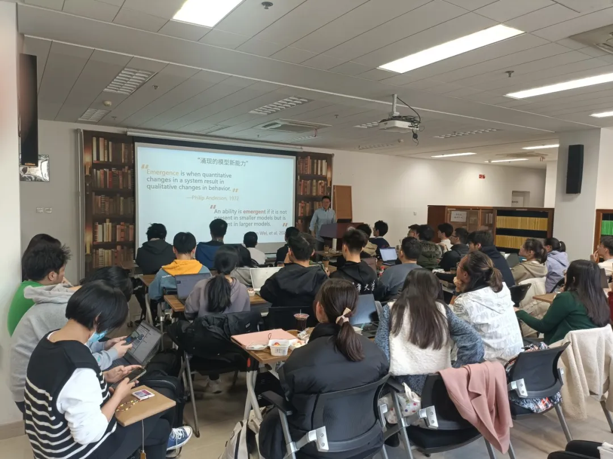
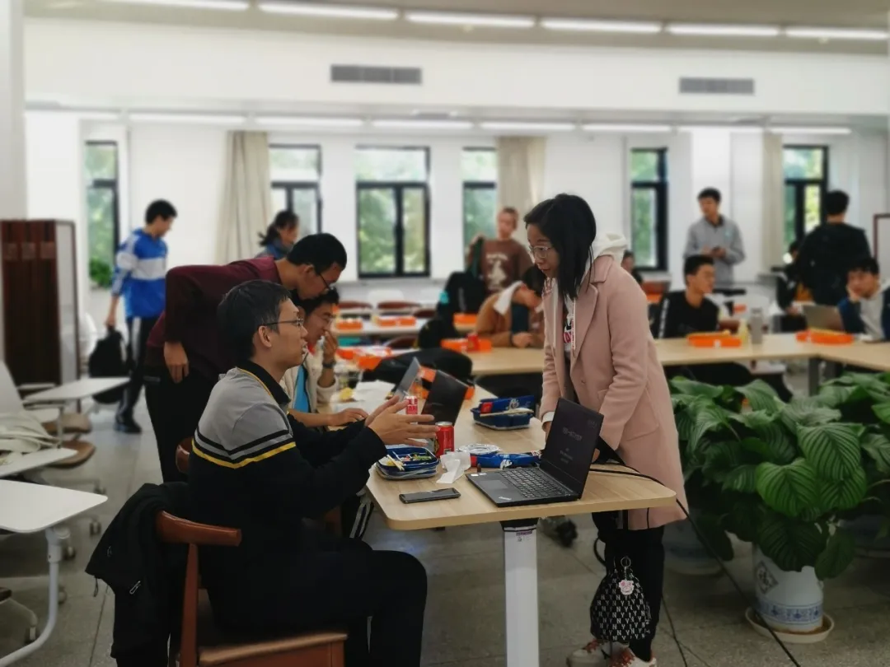
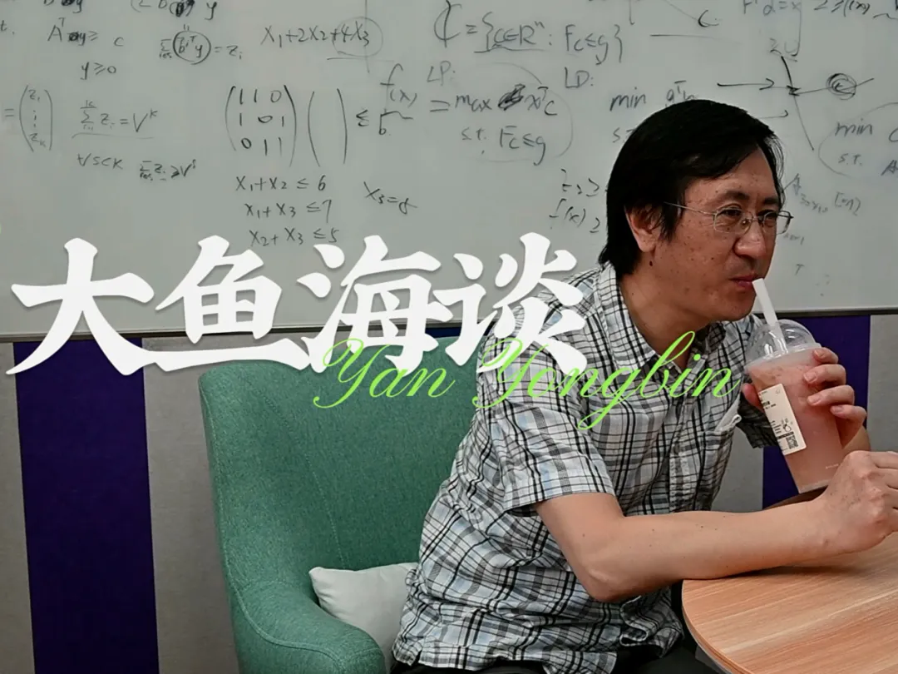
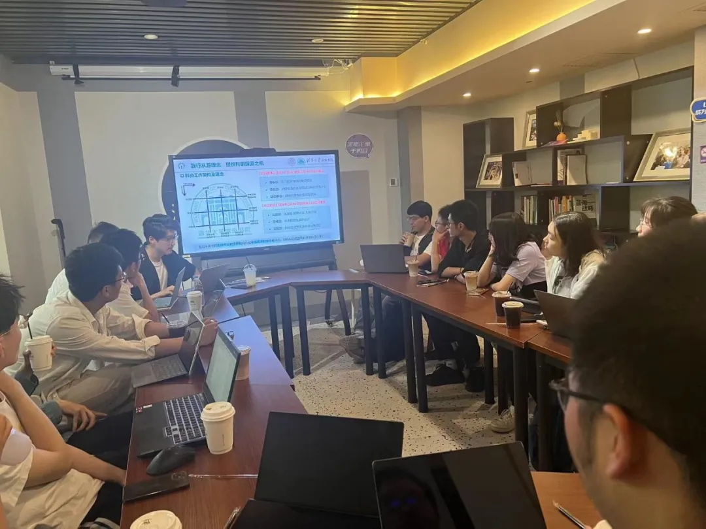
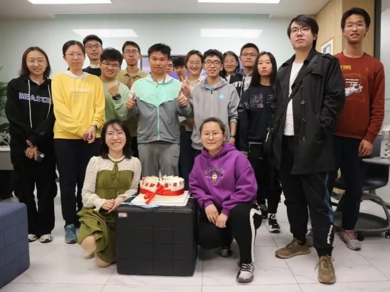
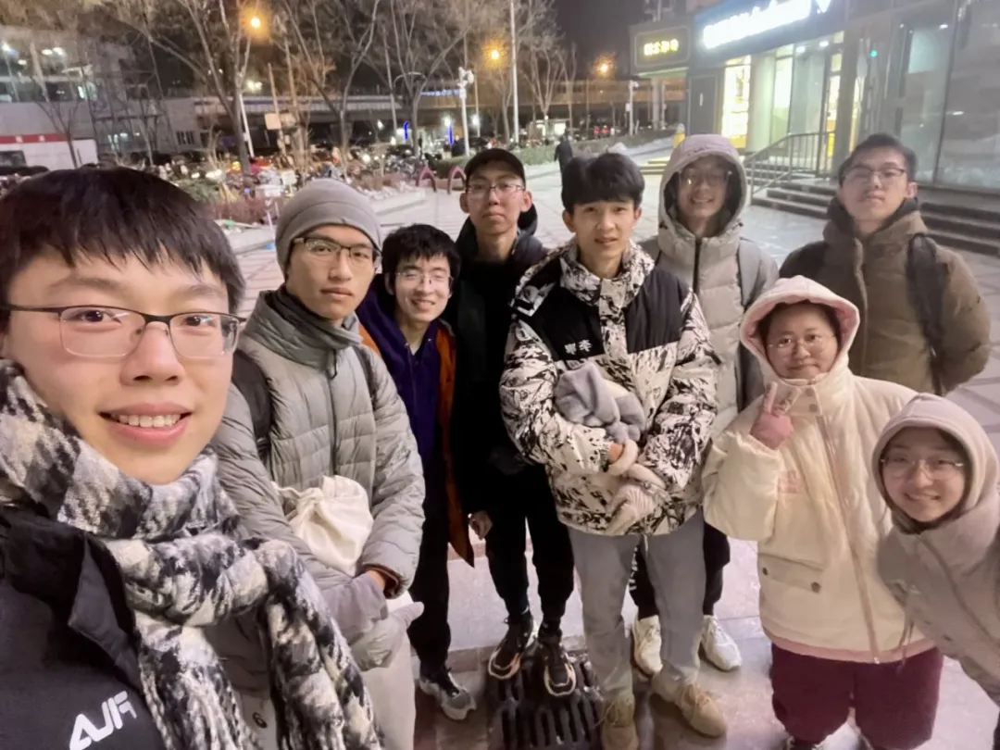

未央科协丨从游部介绍

从游部
戴上工厂主的帽子
经营一场生产师生美谈的从游坊
化身小鱼跃入河流
和可爱可敬的大鱼先生畅谈天地
又或者 邀请朋辈指引方向
在沙龙中与学长学姐们思维碰撞
我们一起做一个渴求知识的梦
科研热点、生涯规划技巧？
探秘物理实验课程的幕后？
抑或是更适合新生的科研入门指南？
拉上伙伴们寻找解密者
再把答案之书呈现给所有好奇的人
1. 部门介绍
从游部源于书院的“从游”文化，是一个年轻且富有未央特色的部门。我们希望成为师生之间、朋辈之间的桥梁，引导同学们在交流中树立科研志趣、培养学术品味、享受从游文化。 这个春天，从游部将打造： 更有深度的从游坊 增加班级从游坊师生互动，完善评价指标，挖掘师生交流的深度。以从游部为主办方，结合时事热点、学生需求自主选题，策划高质量从游坊。期待你的加入让故事更加有趣。 更加多元的大鱼海谈 新学期中，“大鱼海谈”系列教师访谈将丰富内容，聚焦生活话题与科研品味，访谈对象不再局限为大课的任课老师。新一期针对"神秘嘉宾"的海谈已完成策划，等待你在访谈中发掘ta的更多独家内容，给大家增添欢乐的同时带来更多生活启发。 更加成熟的朋辈沙龙 经过一年的探索，朋辈沙龙已经积累了一定筹办经验。本学期中，从游部将主办更多不同主题的沙龙，聚焦科研入门、研究生日常生活、生涯规划等主题，进一步促进朋辈交流，为同学们提供经验参考。     活动现场图片 点击图片查看活动更多细节
2. 我们期待这样的你
可以是脑洞大开的创想家
帮我们发现更多可能
可以是踏实细致的实干家
对每一项任务认真负责
可以是活力四射的社交达人
在联系老师学长时勇敢出击
也可以是文案大手或剪辑大师
为大鱼海谈注入新的生产力
总之————
我们期待一个充满热情的你
一同推进平等对话的师生关系
3. 你将在这里收获
从参与者到组织者 策划者的身份转变 对书院“从游”文化的深入理解 与科研前辈 优秀名师深度交流的机会 写邮件 做推送等社工技能的提升 一群爱玩爱笑 有趣靠谱的伙伴 一段充实快乐的时光 和一个更加自信 更加勇敢的自己   从游部2024春季版，欢迎你的加入
4. 联系人及联系方式
从游部副主席 丁一（微信号：jason__iffvj）
从游部部长 楼煜杰（微信号：L18268843791）
从游部部长 蔡宏来（微信号：chloral-thu
从游部部长 张博轩（微信号：wxid_7fvdv6vlnmhi22）